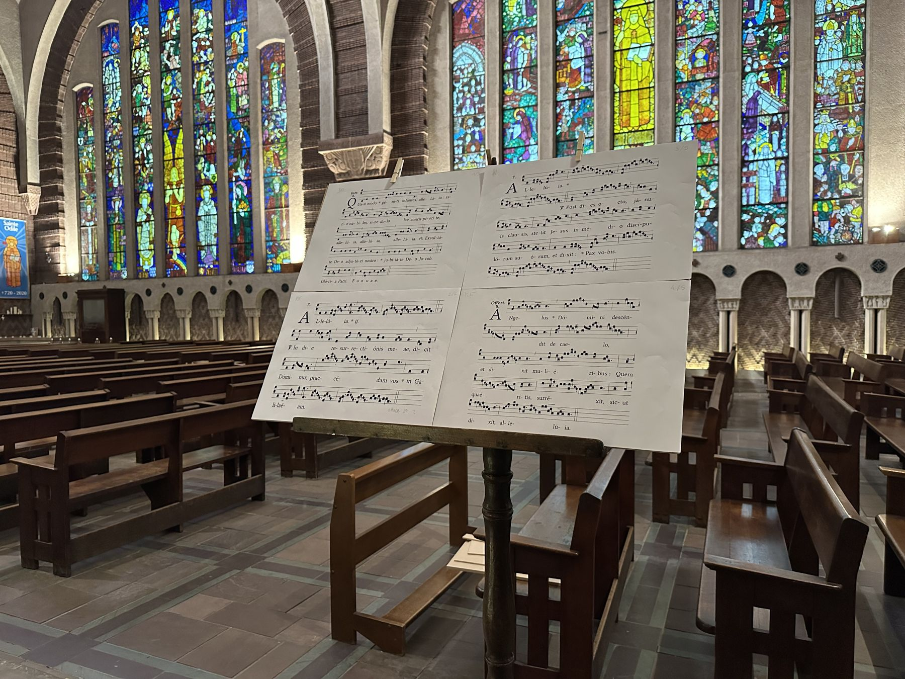

Partitions
Partitions grégoriennes libres de droits chantées par la Schola, en notation carrée. Elles sont librement téléchargeables.

Propre de la messe
Ordinaire et Credo
Choristes
Les partitions de travail sont réservées aux membres de la Schola.
Espace choristes